Home
Categories
Dictionary
Download
Project Details
Changes Log
What Links Here
How To
Syntax
FAQ
License
Editor tutorial
1 Open the editor
2 Create the index
3 Edit the index article
4 Create the first article
5 Edit the first article
6 Add a link to the first article in the index
7 Add an image
7.1 Add an image in the source directory
7.2 Create an image definition file
7.3 Use the image in the first article
8 Notes
9 See also
2 Create the index
3 Edit the index article
4 Create the first article
5 Edit the first article
6 Add a link to the first article in the index
7 Add an image
7.1 Add an image in the source directory
7.2 Create an image definition file
7.3 Use the image in the first article
8 Notes
9 See also
This article is a tutorial to explaining how to use the editor.
You will:
Now double-click on the jar file of the application and:
Click on Editor => Open Editor:
The window of the editor will appear. The only element in the tree is the name of the source directory for the wiki:
Right-click on the source directory element in the tree and choose the "Add Index" sub-menu:
Now we will have to specify the name of the index file in the popup dialog window:
Click on the button at the right of the "File" field and type "index":
We will create an index article named "index.xml" just under the input directory:
Type "Yes": an empty index article has now been created and the tree has been updated:
Now if we select the index in the tree, the left panel show an empty html content because the index is empty for the moment:
 button, we will enter the edition mode, and we see an XML content which we can edit:
button, we will enter the edition mode, and we see an XML content which we can edit:
Now type the following content: "The index for the tutorial wiki." in the editor area:
And lastly click on the button to save the html content on the disk.
button to save the html content on the disk.
Now we can click again on the button to go back to the view mode. We will see the following html content:
button to go back to the view mode. We will see the following html content:
Select the index article we just created in the tree and choose the "Add Article" sub-menu:
Now we will have to specify the name of the article file and its name in the popup dialog window:
Click on the button at the right of the "File" field and type "article1":
JNow type "first article" for the name field:
Type "Yes": an empty regular article has now been created and the tree has been updated:
Now if we select the article in the tree, the left panel show a default html content for the article:
button, we will enter the edition mode, and we see an XML content which we can edit:
Now type the following content: "The content of the first article." in the editor area:
And lastly click on the
button to save the html content on the disk.
Now we can click again on the
button to go back to the view mode. We will see the following html content:
We will type the following content: "The index for the tutorial wiki. A link to the <ref id="first article" />.":
And now click on the
button to save the html content on the disk.
Now we can click again on the
button to go back to the view mode. We will see the following html content:
If we click on the hyperlink, we go to the second article.
The directory is opened in the file system:
Copy an image in this directory:
Now we can refresh the content of the source directory to see the image in the tree:
The tree is updated:
First select the source directory and choose the "Add Images Definition" sub-menu:
We will call the images file "images.xml"[1]
The tree is updated:
Now select the new file in the tree:
We now have to add the image definition in this file. Add the
And now click on the
button to save the file.
button:
Add the
And now click on the
button to save the html content on the disk.
Now we can click again on the
button to go back to the view mode. We will see the following html content:
You will:
- Open the editor
- Create an index article
- Create a first article
- Create a second article
Open the editor
Choose an empty directory to put your articles, and another to put the result of the wiki generation.Now double-click on the jar file of the application and:
- Input directories: Set your directory (with only the index.xml file for the moment)
- Output directory: there is no need to select any directory for now
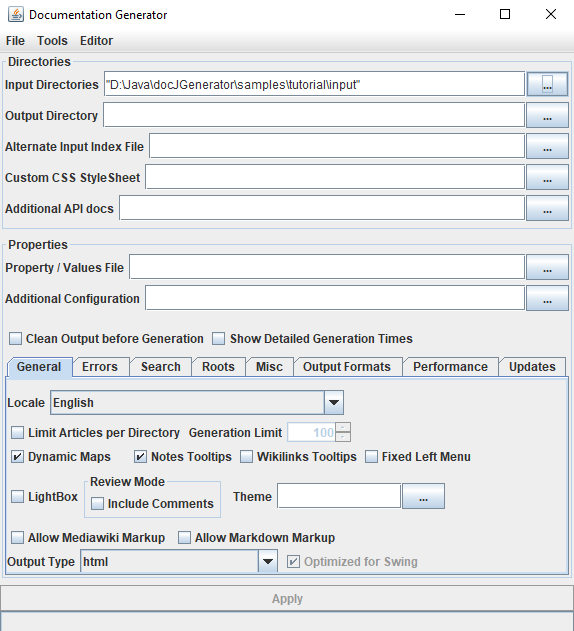
Click on Editor => Open Editor:
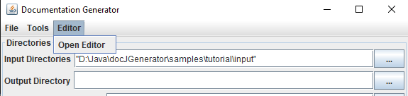
The window of the editor will appear. The only element in the tree is the name of the source directory for the wiki:
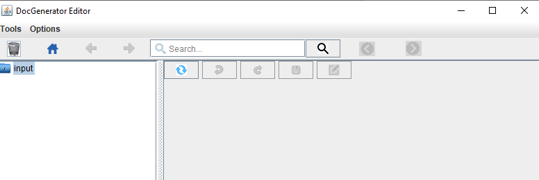
Create the index
We will now create the index article in the editor.Right-click on the source directory element in the tree and choose the "Add Index" sub-menu:
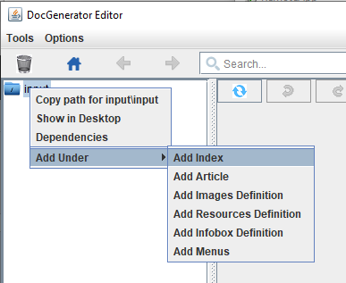
Now we will have to specify the name of the index file in the popup dialog window:
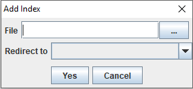
Click on the button at the right of the "File" field and type "index":
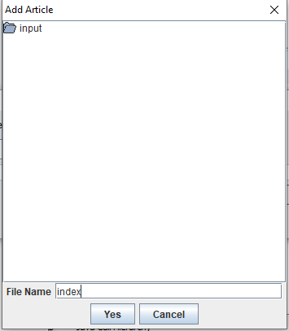
We will create an index article named "index.xml" just under the input directory:
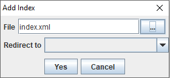
Type "Yes": an empty index article has now been created and the tree has been updated:
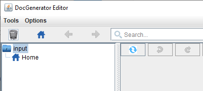
Now if we select the index in the tree, the left panel show an empty html content because the index is empty for the moment:
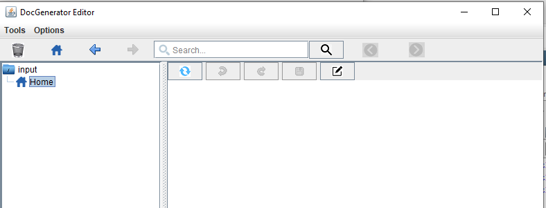
Edit the index article
If we click on the
button, we will enter the edition mode, and we see an XML content which we can edit: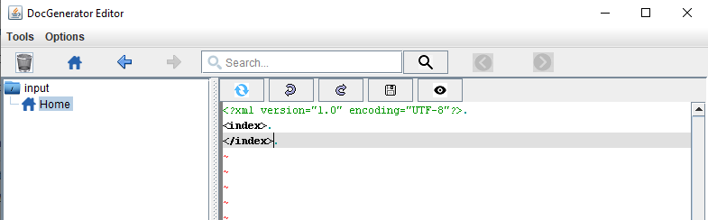
Now type the following content: "The index for the tutorial wiki." in the editor area:
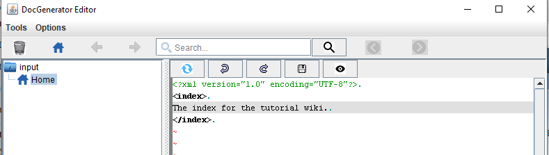
And lastly click on the
button to save the html content on the disk.Now we can click again on the
button to go back to the view mode. We will see the following html content: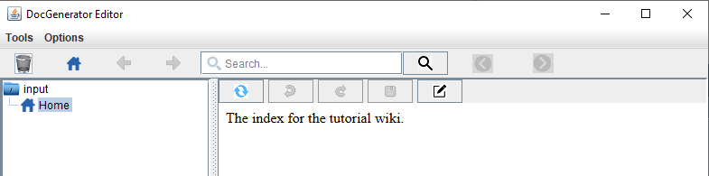
Create the first article
We will now create a regular article in the editor.Select the index article we just created in the tree and choose the "Add Article" sub-menu:
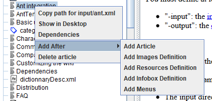
Now we will have to specify the name of the article file and its name in the popup dialog window:
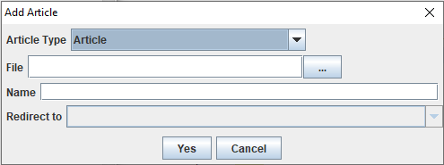
Click on the button at the right of the "File" field and type "article1":
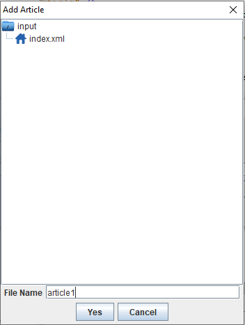
JNow type "first article" for the name field:
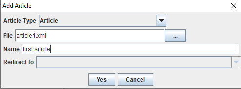
Type "Yes": an empty regular article has now been created and the tree has been updated:
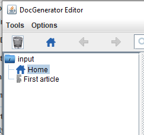
Now if we select the article in the tree, the left panel show a default html content for the article:
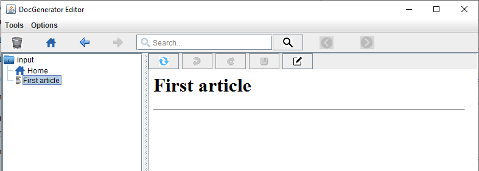
Edit the first article
If we click on the
button, we will enter the edition mode, and we see an XML content which we can edit: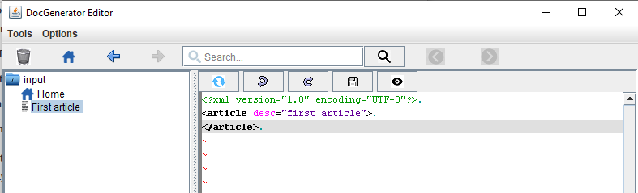
Now type the following content: "The content of the first article." in the editor area:
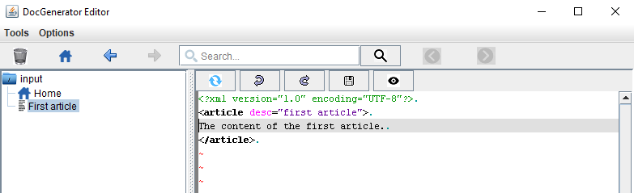
And lastly click on the
button to save the html content on the disk.Now we can click again on the
button to go back to the view mode. We will see the following html content: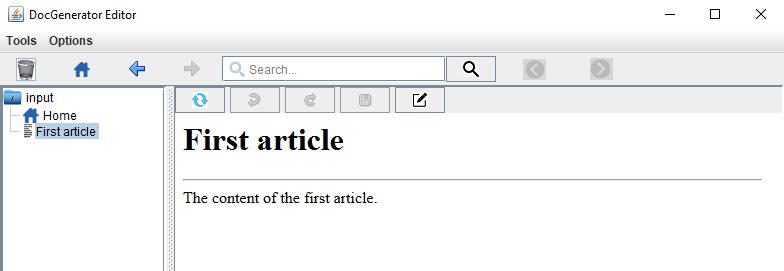
Add a link to the first article in the index
We will also add an internal wikilink to this article in our index file. Select the index again, and go in the edit edition mode:We will type the following content: "The index for the tutorial wiki. A link to the <ref id="first article" />.":
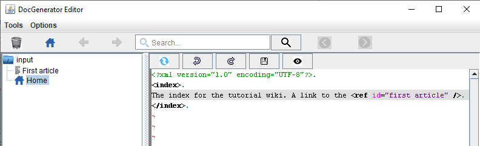
And now click on the
button to save the html content on the disk.Now we can click again on the
button to go back to the view mode. We will see the following html content: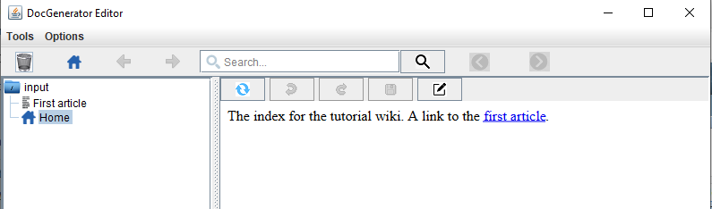
If we click on the hyperlink, we go to the second article.
Add an image
We will add an image in the source director, use this image in an image definition file, and use it in an article.Add an image in the source directory
We will add an image in the source directory. To do that, Right-click on the source directory element in the tree and choose the "Shown in Desktop" sub-menu: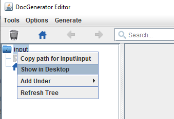
The directory is opened in the file system:
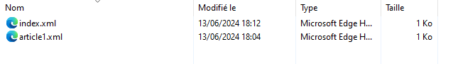
Copy an image in this directory:
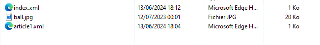
Now we can refresh the content of the source directory to see the image in the tree:
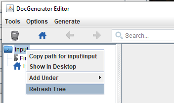
The tree is updated:
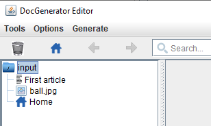
Create an image definition file
We will now create an image definition file and use this image.First select the source directory and choose the "Add Images Definition" sub-menu:
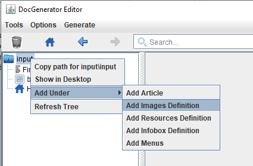
We will call the images file "images.xml"[1]
Any other name would work
: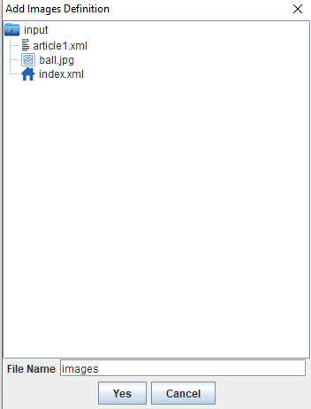
The tree is updated:
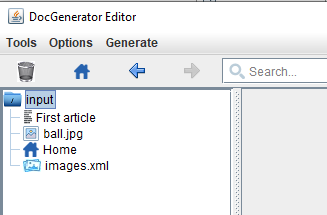
Now select the new file in the tree:
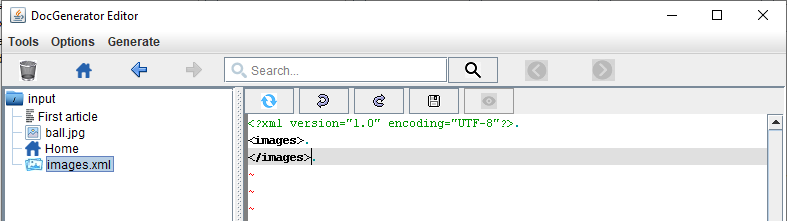
We now have to add the image definition in this file. Add the
<imgage id="ball" url="ball.jpg" /> line: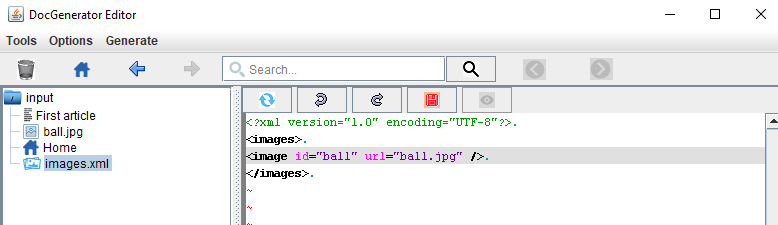
And now click on the
button to save the file.
Use the image in the first article
Select again the first article and click on the
button:Add the
<img id="ball" /> line: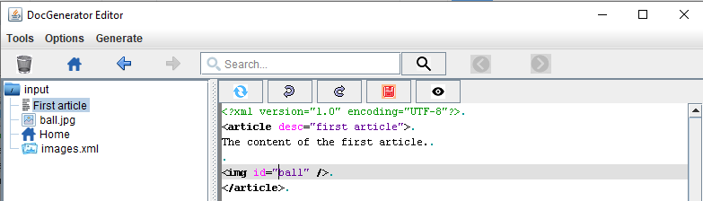
And now click on the
button to save the html content on the disk.Now we can click again on the
button to go back to the view mode. We will see the following html content: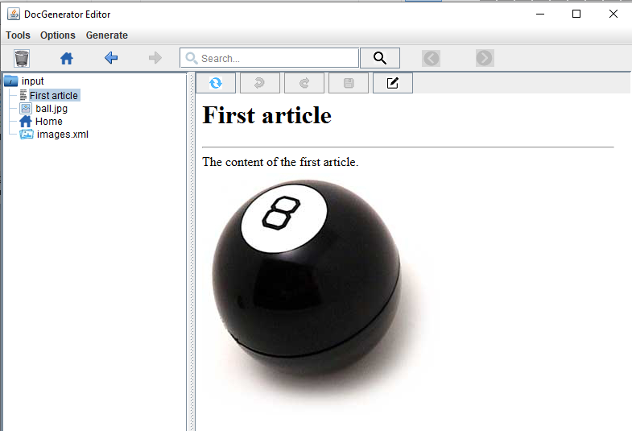
Notes
- ^ Any other name would work
See also
- Editor: This article explains the DocGenerator editor
×

Categories: Tutorials